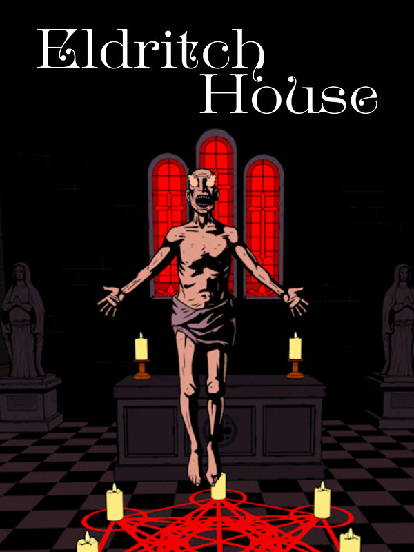

The Seance of Blake Manor
The Seance of Blake Manor
Details
|  | |
| Playtime | Not Played |
| Last Activity | Never |
| Added | 2025-11-16 15:04:37 |
| Modified | 2025-11-16 15:04:41 |
| Completion Status | Not Played |
| Library | Steam |
| Source | Steam |
| Platform | PC (Windows) |
| Release Date | |
| Community Score | |
| Critic Score | |
| User Score | |
| Genre | Adventure Indie |
| Developer | Spooky Doorway |
| Publisher | Spooky Doorway |
| Feature | Single Player |
| Links | Steam Official Website Twitch Bluesky Discord |
| Tag | Adventure Atmospheric Choices Matter Dark Detective First-Person Historical Horror Indie Investigation Mystery Mythology Narrative Noir Psychological Horror Puzzle Singleplayer Story Rich Supernatural Word Game |
Description
Ireland, October 29, 1897.
I’ll waste no time, since there’s none for wasting. I write from Blake Manor in Connemara.
Yesterday, a guest went missing – a young woman named Evelyn Deane. The owner and staff carry on as if nothing has happened.
She has not left, of that I am sure.

It is October 29th, 1897, and Private Investigator Declan Ward arrives at Blake Manor to find a missing woman.
What he finds is the Grand Séance and a group of mystics who have gathered from all corners of the world – waiting for All Hallow’s Eve, the night when the veil between worlds is thinnest. The night to tear down the barrier and speak to the dead.

Interview and interrogate your suspects, keep a record of all evidence, motivations, and clues in your journal, and confront them about their motivations when you’re certain of your deductions. Uncover the truth about Blake Manor and the mysterious séance that has brought everyone together.
Navigate Blake Manor's haunted corridors and uncover its secrets as you race against time to save Miss Deane.

Investigate the manor, solve environmental clues and reach the forbidden areas of the hotel…and beyond.
But be careful - each action counts the day down. Be in the right place at the right time to catch critical events pertinent to your investigation. Everyone has their own agendas and schedules – it could truly be a loss to miss out on a quick chat by mistiming your actions. And who knows what hidden secrets lie in wait once you’ve turned in for the night...

Brought to you by the creators of The Darkside Detective and Raw Fury, The Séance of Blake Manor is depicted by a beautiful comic-book art style. Inspired by Irish Mythology and the spiritualist movements of the Victorian era, players are cast into a first-person narrative adventure, blending the supernatural with a classic detective mystery. With its striking cutscenes, compelling narrative and dynamic soundtrack that reacts to the environment around you, Blake Manor and its secrets will leave you on the edge of your seat morning through night.
...I know the West of Ireland might as well be the far side of the world, for its distance from you but there is no one else to turn to.
I hear you are an honourable man, a steadfast investigator. And – perhaps most importantly – godly.
I pray for the girl that this is true...
This game is currently only available in English language.